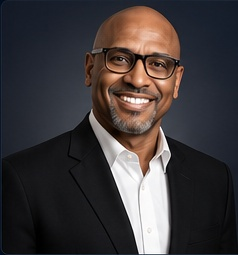

Bruce L. Harris Sr.
Co-Founder, President & CEO
Former Director of Casino Operations with 45+ years of global casino leadership across multiple jurisdictions. A UT Austin Post Graduate AI & Machine Learning graduate, Bruce combines deep operating experience with applied AI to lead Ver-atex’s vision for verified intelligence.